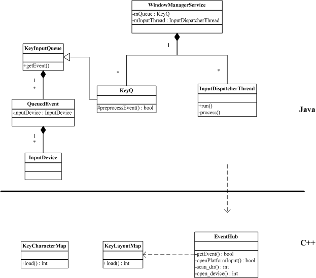

Event事件的实现(Android 2.1)
相关文件
// Java相关
framework/base/core/java/android/view/IWindowManager.aidl
framework/base/core/java/android/view/KeyCharacterMap.java
framework/base/services/java/com/android/server/WindowManagerService.java
framework/base/services/java/com/android/server/KeyInputQueue.java
framework/base/services/java/com/android/server/InputDevice.java
// JNI接口
framework/base/services/jni/com_android_server_KeyInputQueue.cpp
framework/base/core/jni/android_text_KeyCharacterMap.cpp
// C++相关
framework/base/libs/ui/EventHub.cpp
framework/base/libs/ui/KeyLayoutMap.cpp
framework/base/libs/ui/KeyCharacterMap.cpp
Event事件处理流程
首先我们要明确一个概念，keyboard或者touch事件最先由底层硬件接收，再通过驱动一层一层向上传递。中间经过了JNI调用，
进程间通信等过程。而Java层主要是根据不同的事件类型，调用用户自定义的回调方法，从而做出不同事件的响应处理。无论是哪种类型的事件，
都是经过统一的处理流程来实现。
其次，我们还需要知道Event事件是通过Service获取，目前Android是通过创建Java层的WindowManagerService，该服务通过JNI调用C/C++
代码来实现Event事件的接收，最后传递给当前焦点的Activity。我们的分析从Service开始。
Java层的service实现
Java层会在SystemServer启动时加载WindownManagerService的服务。该类继承自IWindowManager.Stub，并包含
InputDispatcherThread内部类，用来处理Event事件的分发，根据不同的事件类型进行不同的处理，如keyboard事件或者touch事件。
内部类KeyQ继承自KeyInputQueue，用来接收从底层传递上来的Event事件。WindowManagerService的构造方法会初始化这两个类，
见WindowManagerService.java。
事件如何接收
KeyQ用来接收Event事件，具体的处理在基类KeyInputQueue中实现。基类的构造方法会开启一个线程，并调用readEvent()方法等待事件到来。
而readEvent()则是native的C++实现，我们稍候再做分析。除了readEvent()方法，KeyInputQueue还包含获取设备其他信息的native方法，
而这些方法将作为IWindowManager的接口实现。见KeyInputQueue.java。
事件如何分发
InputDispatcherThread会调用KeyQ.getEvent()方法获取QueuedEvent对象。QueueEvent是KeyInputQueue的内部类，
它包含了设备类型和设备信息，分发线程会根据这些信息做出不同的处理。见InputDispatcherThread线程。
JNI层的接口实现
刚才提到了KeyInputQueue会开启线程，并调用readEvent()方法读取Event事件，该方法为native方法，定义在
com_android_server_KeyInputQueue.cpp中，它会调用EventHub.getEvent()方法实现真正的轮询处理。
C++层的事件处理实现
EventHub位于ui库中，该类实现了上面提到的大多数native方法，其中getEvent()用来接收驱动传递过来的Event事件。它首先调用
openPlatformInput()方法，再通过scan_dir()方法扫描/dev/input目录并查找所有可用设备节点名称，open_device()方法打开设备节点并
获取设备名称、ID、描述符等信息。随后getEvent()进入无限循环，使用poll()调用接收所有设备节点的Event事件。见EventHub.cpp。
如何处理scancode的映射
前面提到过keyboard类型的输入需要将scancode映射到keycode。open_device()方法在打开设备的同时调用KeyLayoutMap.load()
方法打开%s/usr/keylayout/%s.kl文件，将映射的值保存在KeyCharacterMap.Key数据结构中。见open_device方法。
如何处理字符的映射
keycode到字符的映射需要使用*.kcm.bin文件，这个功能由KeyCharacterMap类实现，它也使用load()方法来加载*.kcm.bin文件，
该方法被android_text_KeyCharacterMap.cpp的ctor()方法调用作为KeyCharacterMap.java的JNI接口。见KeyCharacterMap.cpp。
Event处理类图

参考代码
{kind=link}